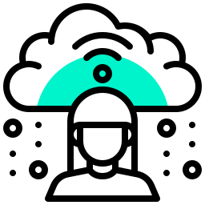
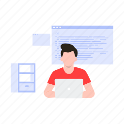

Solusi lengkap untuk mengelola kehadiran, baik untuk UMKM, Perusahaan skala besar, hingga institusi Pendidikan.
Produk
Tidak perlu lagi bingung datang ke masing-masing kantor untuk dapatkan data absensi dari lokasi berbeda.
ProdukKembangkan aplikasi bisnis Anda lebih mudah dan instan dengan Software Development Kit Fingerspot.
ProdukFingerku memiliki 2 Customer Care Centre di 13 kota besar di Indonesia yang selalu siap melayani kebutuhan Anda.
Produk Fingerku baik software dan hardware menawarkan berbagai fitur terbaru seiring perkembangan teknologi terkini.
Mesin absensi sidik jari, wajah & akses kontrol pintu telah menjalani tes pemeriksaan dan lolos kendali mutu sesuai standar kualitas tinggi.
Tersedia berbagai software personalia dan penggajian terbaru yang memberikan kemudahan dalam pengolahan data absensi.
Layanan cloud dan produk berbasis teknologi mobile membantu Anda mengelola data absensi secara mudah, cepat, dan akurat.

Tim Support Fingerku selalu siap melayani pertanyaan dan menangani keluhan Anda secara cepat, tanggap, dan tepat.
"Tahun ajaran baru 2021/2022 kami merekrut guru baru. Saya sebagai kepegawaian memasukkan data baru ke mesin finger tetapi mengalami kendala data karyawan baru tersebut tidak bisa terbaca di laporan..."
Setyo Wartono SD IT Cahaya Bangsa Mijen"Pemasangan sistem akses pintu di SPBU Shell Karang Tengah, Ciledug – Tangerang berlangsung dengan baik. Tim teknisi bekerja profesional, tepat waktu, dan instalasi dilakukan dengan rapi. Sistem berfungsi optimal dan sangat membantu dalam meningkatkan keamanan area. Terima kasih atas layanan yang memuaskan."
Jaka SPBU Sell Indonesia"Hari Sabtu, sore-sore ada kendala setting jam kerja... dan ternyata lewat webnya Fingerku ada konsultasi online. Saya pikir itu robot, ternyata dibantu petugas langsung..."
Rizki Klinik Kesehatan"Pemasangan CCTV dan instalasi internet di pabrik kami berjalan dengan baik. Tim teknisi bekerja profesional dan cepat. Kualitas gambar CCTV jernih, dan koneksi internet stabil. Sangat membantu dalam pengawasan dan kelancaran operasional. Terima kasih atas pelayanannya."
Rina Nugroho PT Juangdong Indonesia"Layanan instalasi dan pelatihan fingerprint di SDN 07 Pagi Kedoya Selatan berjalan dengan lancar. Tim teknisi profesional, ramah, dan memberikan penjelasan yang mudah dipahami oleh pihak sekolah. Sistem fingerprint berfungsi dengan baik dan sangat membantu dalam pencatatan kehadiran. Terima kasih atas pelayanan yang memuaskan."
Marduni SDN 07 Pagi